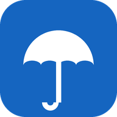

earllnRainOrNot
근처 CCTV로 비 오는지 확인
☔ 지금 비 와? 확인하기
현재 위치 주변 CCTV를 찾아 AI가 우산 쓴 사람을 확인합니다.
🔊 다시 듣기
📹 CCTV 보기
↻ 다시 분석
주변 CCTV
설정
Gemini API 키
(필수)
Google AI Studio에서 무료로 발급받은 키를 붙여 넣으세요. 키는 이 기기 브라우저에만 저장됩니다.
키 발급받기 ↗
ITS API 키
(지방 CCTV용, 선택)
서울 밖(전국 국도) CCTV를 보려면 국가교통정보센터에서 무료로 발급받은 키를 넣으세요. 이 기기 브라우저에만 저장됩니다.
ITS API 키 발급 방법 (무료, 5분 정도)
국가교통정보센터 공개 API ↗
페이지를 엽니다.
회원가입 후 로그인합니다.
오픈 API 목록에서
'CCTV 정보'
를 찾아 활용 신청(인증키 신청)을 합니다. 이용 목적은 '개인 날씨 확인'처럼 간단히 적으면 됩니다.
승인되면(보통 바로~1일) 마이페이지의 인증키 관리에서 키를 복사합니다.
위 'ITS API 키' 칸에 붙여 넣고 저장하면 끝!
사이트 메뉴 이름은 바뀔 수 있어요.
검색 반경
1 km
3 km
5 km
10 km
20 km
50 km
열 때 바로 분석 (위치 권한 허용 후)
음성 안내
지붕 아래 사람 제외 (정류장·처마·실내)
·
earlln.com
취소
저장
✕
미리보기 · ccr-e807c3fb-g8xua6 · 실제 사이트가 아니에요